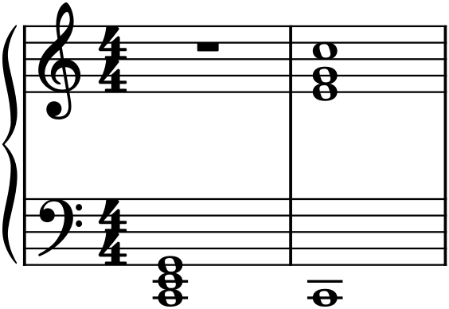
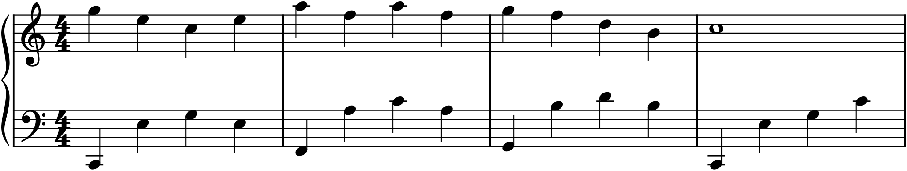

Part 5 moves outward, from the single line and the keyboard sketch toward writing for real ensembles — two instruments, then four, in conversation. But it begins, fittingly, with the piano, because the piano is the instrument nearly every composer thinks at, and because it is, all by itself, a kind of ensemble: two hands, ten fingers, a seven-octave range, and the ability to sound melody, harmony, and bass all at once. Learning to write well for it — to voice its chords, divide its two hands, and use its pedal — is both a worthy end in itself and the ideal training ground for the ensemble writing to come, where the same principles reappear with different instruments in place of fingers.
27.1The piano as an ensemble
The piano’s range spans from the lowest rumble to the highest tinkle — over seven octaves, far wider than any single orchestral instrument — and it is written on the grand staff (Chapter 5), two staves braced together, one for each hand. What makes it a self-sufficient ensemble is that it can do everything at once: a melody in the top, an accompaniment in the middle, a bass at the bottom, all sounding together under a single player’s control. Everything you learned about melody (Part 3) and harmony (Part 2) can be realized complete at the piano, which is exactly why composers sketch at it. When you write for piano, you are effectively conducting a small orchestra of your own two hands.
27.2The two hands
The default division of labour is simple: the right hand takes the melody and the upper harmony, and the left hand takes the bass and the accompaniment. This is the texture of most of the accompaniment patterns in Chapter 21 — tune on top, chords or broken figures below — and it is where to start. But the division is flexible, not fixed. The hands can swap roles (a melody in the left hand, under accompaniment in the right), share a line between them, or even cross over one another. The two hands are a duet that one person plays, and like any duet, who leads and who supports can change from moment to moment.
27.3Voicing and spacing
How you space a chord across the keyboard matters enormously, and one principle dominates: the low register must be kept open. Close-spaced chords sound clear and full in the middle and upper ranges, but down in the bass the overtones clash and the sound turns to mud. So low notes want space between them — wide intervals, or single notes — while the fuller, closer harmony lives higher up.

The contrast in Figure 27.1 is one every pianist-composer internalizes: a third low in the bass is muddy, the same third an octave or two higher is warm. The practical rule is to voice with the root (or root and fifth) low and alone, and stack the closer harmony above it — exactly the low-bass-note-then-broken-chord shape of a good left hand. Widely spaced at the bottom, closely spaced at the top: that is how the piano is built to resonate.
27.4A full texture
Put the principles together and you get a complete, idiomatic piano texture: a singing melody, a bass that grounds the harmony, and a middle that fills it in.

The texture in Figure 27.2 is worth studying because it solves several problems at once. The low bass note gives a clear foundation (well spaced, per §27.3); the broken chord supplies harmony and rhythmic motion without competing with the tune; and the registers are kept sorted — bass low, harmony middle, melody high — so nothing is muddy and nothing collides. Master this one texture and its cousins from Chapter 21, and you can accompany any melody convincingly.
27.5The pedal
The piano’s sustain pedal (the right pedal) lifts the dampers so that notes keep ringing after the fingers release them, and it transforms what the instrument can do. With the pedal down, the left hand can strike a low bass note and then leave it to play a broken chord higher up, while the bass note keeps sounding underneath — which is exactly what makes the texture of Figure 27.2 work in performance. The pedal blurs and connects, adding resonance and letting harmonies bloom; it is changed (lifted and re-pressed) at each new harmony, so that the chords do not smear into one another. In a score, pedaling is shown with a pedal line or the marks Ped. (down) and ✳ (up) beneath the bass staff. You do not need to mark every pedal — pianists pedal by ear and instinct — but knowing that the pedal is there, sustaining your harmonies and enriching your resonance, changes how you write: you can spread a chord across time and register and trust the pedal to hold it together.
27.6Writing idiomatically
Finally, write what lies under the hands. A hand spans about an octave comfortably (a little more for large hands, less for small), so a chord wider than that in one hand must be arpeggiated — rolled — rather than struck solid, and a leap must leave time to travel. Keep the two hands out of each other’s way in register, give the thumb-side and little-finger-side of each hand playable shapes, and remember that scales, arpeggios, and broken chords fall naturally under trained fingers while awkward stretches and tangled hand-crossings do not. When in doubt, imagine your own two hands on the keys — or better, try it at a real keyboard. Idiomatic writing is simply writing that a pair of human hands can, and wants to, play.
In MuseScore
MuseScore’s Piano score is a grand staff with the two hands as its two staves, and it has the tools for genuine keyboard textures.
- Start a Piano score (File ▸ New ▸ Piano): two staves, treble and bass, braced. Put the melody and upper harmony in the top staff, the bass and accompaniment in the bottom.
- Cross-staff notation lets a run or broken chord flow between the hands: enter the notes in one staff, then press Ctrl+Shift+↑/↓ to push selected notes to the other staff — useful for the low-bass-then-broken-chord shape that reaches up from the left hand.
- Add pedal lines from the Lines palette beneath the bass staff to mark sustain, and MuseScore will hold the notes on playback.
- Voice a chord well by keeping the bass note low and alone and stacking the rest higher (§27.3); play it back and listen to the low register for mud.
Try it: recreate the texture of Figure 27.2 — a melody in the right hand, and in the left a low bass note followed by a rising broken chord — and add a pedal line under each bar. Play it, then try the same melody with a muddy close chord low in the left hand instead, and hear the difference clarity of spacing makes. That comparison is the whole lesson of writing for the piano, which is the instrument the rest of Part 5, and the orchestra beyond it, will build upon.